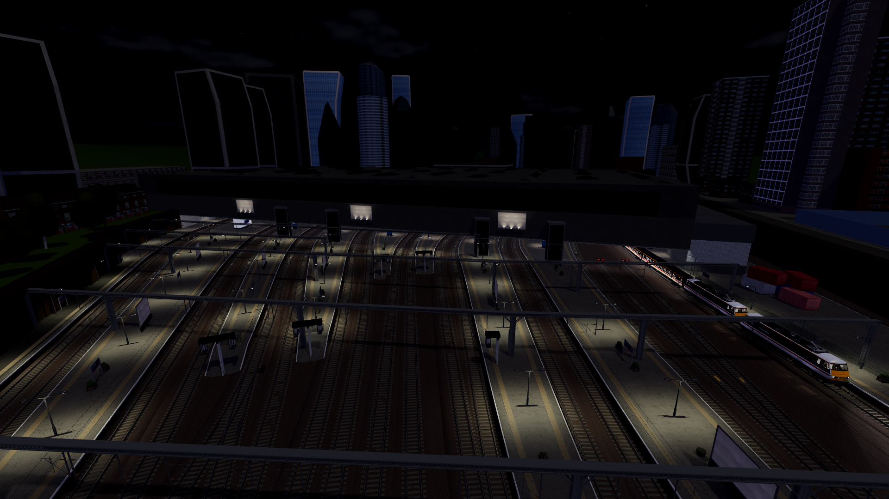
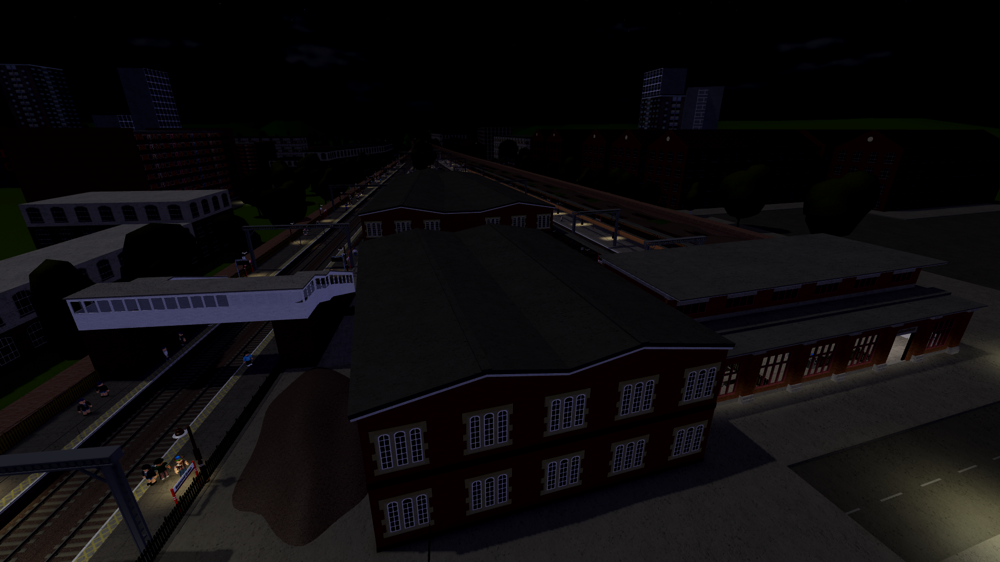
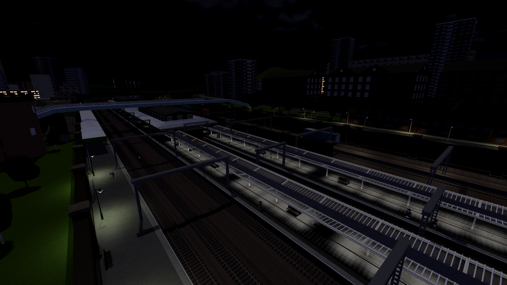
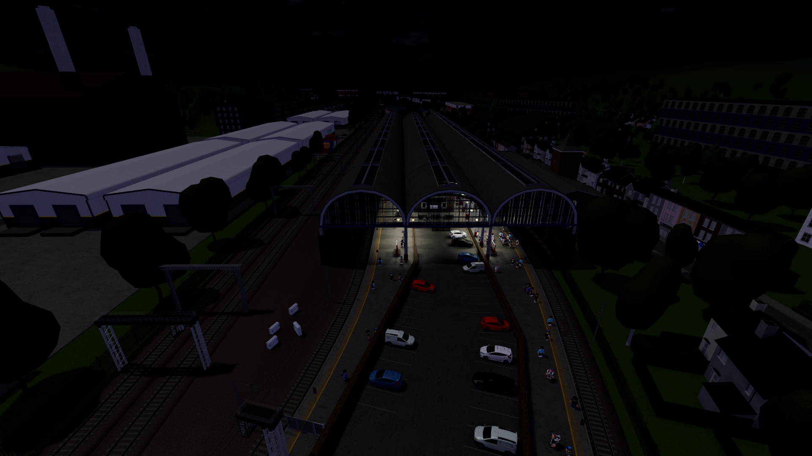
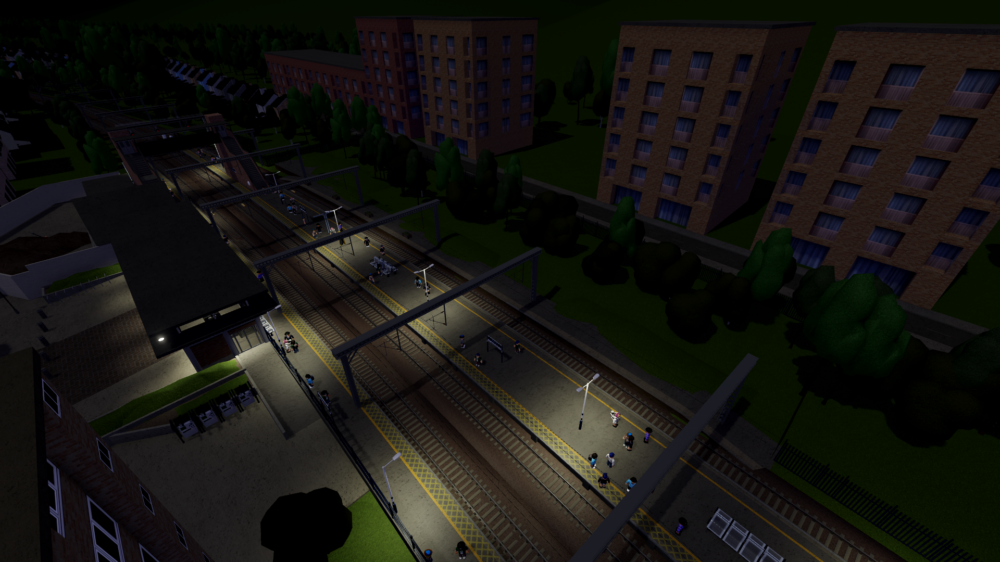

Our Most Popular Stations
-

Avonhill: The Grand Gateway
Experience the grandeur of Avonhill, the majestic terminus of mainline services from Norrington and Mill Bridge. This ancient station is steeped in history, with tales of the past waiting to be uncovered. Come and explore its grand architecture, and discover the secrets that lie within.
-

Belmond Green: A Charming Haven
Escape to the quaint and picturesque Belmond Green, a station that will transport you to a bygone era. With its charming architecture and tranquil atmosphere, this station is the perfect place to slow down and unwind. Come and discover the simple joys of Belmond Green.
-

Leaton: The Bustling Hub
Get ready to be in the heart of the action at Leaton, one of the busiest stations in the game! With connections to almost every station directly, this major hub is the perfect place to start your journey. Whether you're a seasoned traveler or just starting out, Leaton has everything you need to get moving.
-

Norrington: The Busy Terminus
Feel the energy of Norrington, a busy terminus that's always on the go! With direct trains to Leaton and Mill Bridge, this station is the perfect place to connect with the rest of the network. Come and experience the hustle and bustle of Norrington for yourself.
-

Mill Bridge: A Countryside Gem
Discover the natural beauty of Mill Bridge, a charming countryside station surrounded by rolling hills and picturesque villages. With frequent trains to Avonhill and Leaton, this station is the perfect place to escape the hustle and bustle of city life. Come and experience the peace and tranquility of Mill Bridge for yourself.
-

Cuffley: The Heart of Football Country
Get ready to score big in Cuffley, a charming town that's home to its very own football club and stadium! Catch a match and soak up the electric atmosphere, or explore the town's quaint streets and discover its hidden gems. Whether you're a footy fan or just looking for a fun day out, Cuffley is the perfect destination for you!